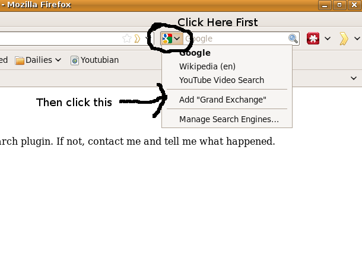
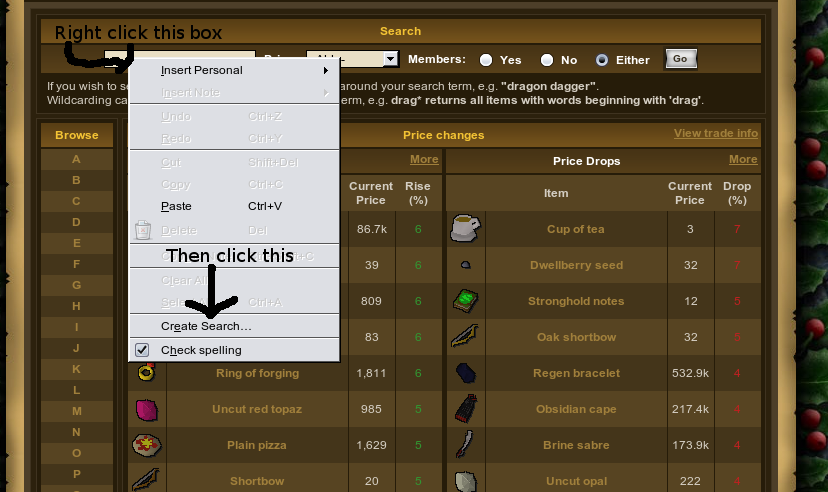
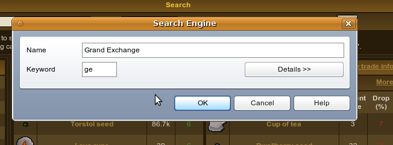
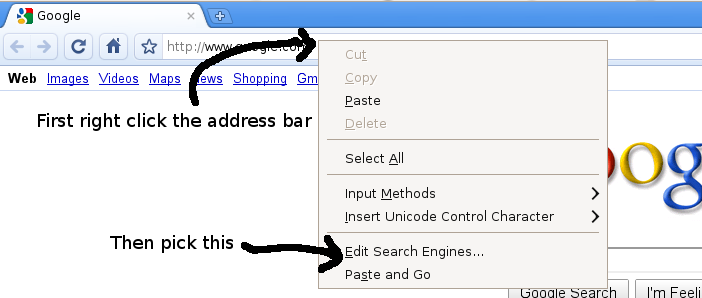
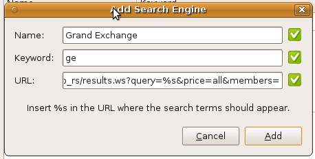

Grand Exchange Searcher
Pick your browser:
Firefox or Internet Explorer
Opera
Google Chrome
If something doesn't work, contact me tell me what happened.
Firefox and Internet Explorer
While on this page, follow these directions:

That's a firefox image, Internet Explorer is basically the same: Same first step, then pick Add Search Providers then Grand Exchange
Keyboard shorcuts for Firefox: Ctrl-K to go to the search bar, and Ctrl-Up and Ctrl-Down to select which search to use.
Keyboard shorcuts for Internet Explorer: Ctrl-E to go to the search bar, and Ctrl-Up and Ctrl-Down to select which search to use.
Opera
Go to the GE page , right click on the box where you usually enter the name of the item, and choose "Create Search". In image form:

For name, enter Grand Exchange and for keyword enter ge.

Here's how keyword works. Say you make the keyword "ge". Then if you type in the address bar (w/o quotes) "ge bandos" then it'll search ge for bandos. This works in addition to the search appearing in the search box.
Keyboard Shortcuts for Opera: Ctrl-E sends you to the search box, then up and down arrow keys to choose which search you want to use.
Google Chrome
Right click your address bar and choose "Edit Search Engines", like so:

Click Add and input the following:
Name: Grand Exchange
Keyword: ge
URL: http://services.runescape.com/m=itemdb_rs/results.ws?query=%s&price=all&members=
It should look like this:

How to use: Google Chrome doesn't have a seperate search bar, it is fused into the address bar. To use this, go to the address bar, type in "ge", press tab, and then enter your query and press enter. If you'd rather type, say "rs" instead of "ge", make "rs" the keyword.